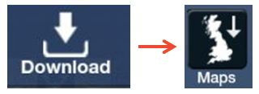
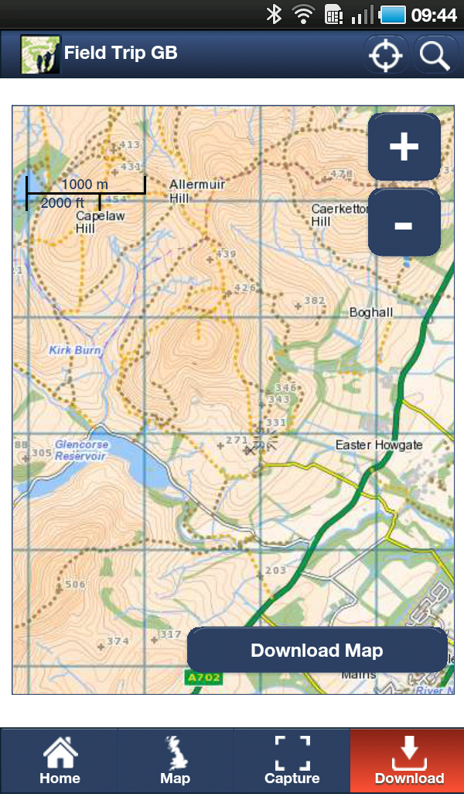
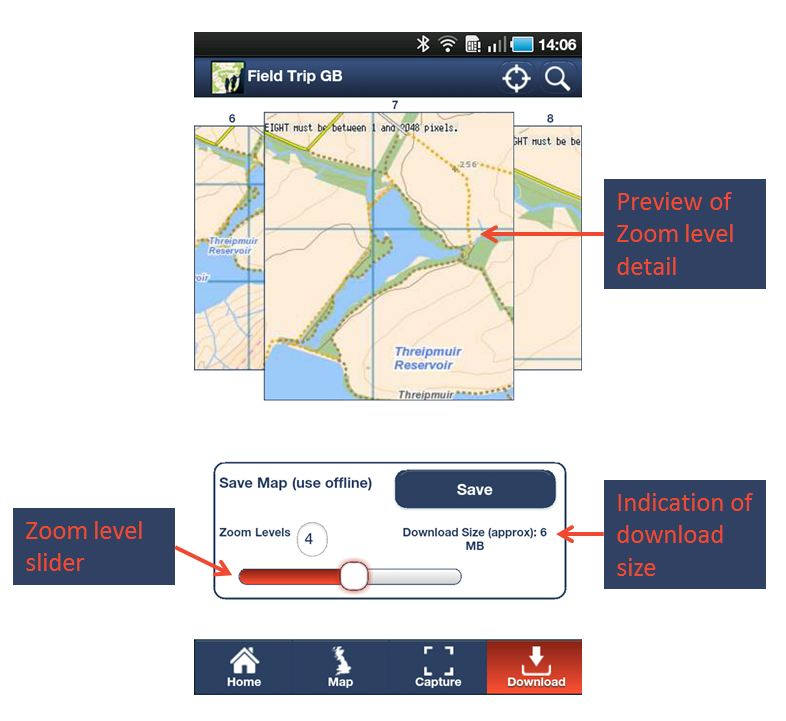

FieldTrip GB allows users to save maps to their devices so that they can use them in areas where there is poor, or no, mobile internet. Saving maps to the device has the additional advantage of reducing to amount of data that the app consumes.
To save a map to the device, click the Download Button and then the Maps Button (Fig 4.1).

Fig 4.1 - Download and Maps
This will open a Map window (Fig 4.2). Use the standard mapping controls to pan and zoom the map to the area you want to download.

Fig 4.2 - Download Map screen
Once you are happy that you can see the area that you want to download, press the Download Map Button and a pop-up will appear. The pop-up allows you to specify the number of zoom levels you want to download (fig 4.3). The number of zoom levels available will depend on how zoomed in you are initially.

Fig 4.3 - Set zoom levels to download
If your field area is quite large then you will set the initial map to zoomed out view. If the field area is compact, then you can set the initial view zoomed in and reduce the size of the data you download.
To initiate the download, tap the Save Button and give the Map a name (Tip - I tend to find giving it a placename helps). The map will be available in FieldTripGB in offline mode. To select a map for offline viewing tap Home in the footer and then the Saved Button in the Maps section. Your saved maps will be displayed in a list and your can preview the area that they cover by taping on them. The map view will update and the red rectangle represents the spatial extent of the saved map (Fig 4.4).
Fig 4.4 - Selecting a Saved Map